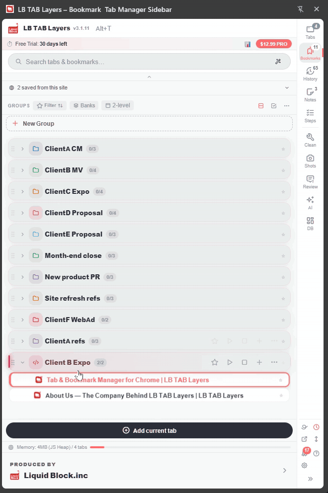
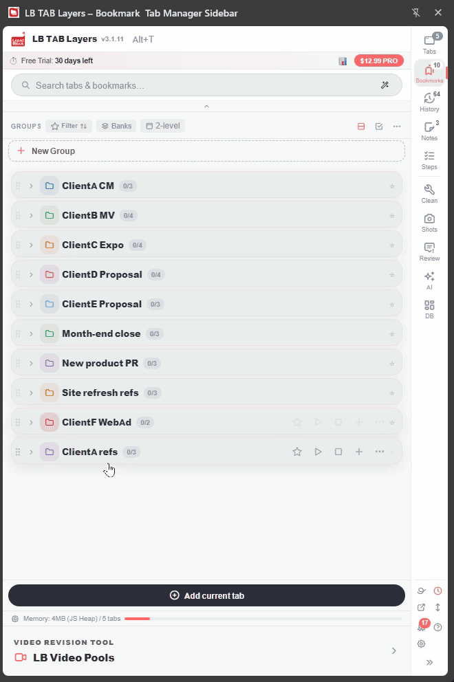
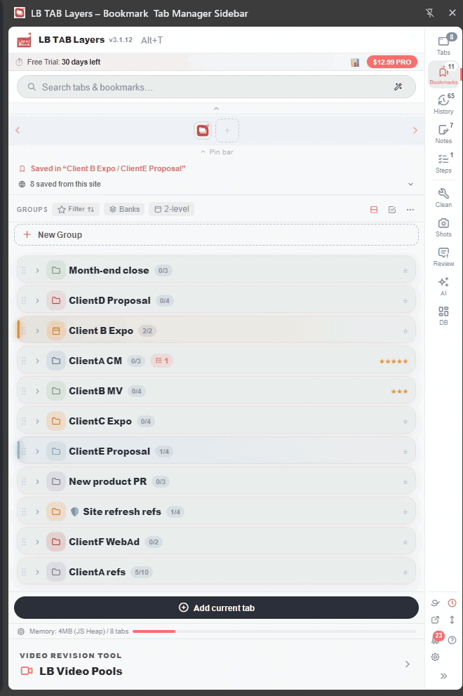

A group is how LB TAB Layers bundles tabs together — think of it as a folder. You create one with the New Group button, give it a name, one of 8 colors and an icon, and you can nest subgroups inside it. Every group is saved as a real Chrome bookmark folder.
What you can do with groups
| Action | How |
|---|---|
| Create | Click New Group (the folder icon with a plus) at the top, enter a name, pick a color and an icon, then click Create |
| Add a subgroup | Use Add subgroup on the group |
| Add tabs | Click Add current tab on the group, or drag a tab onto it |
| Open all / close all | ▶ opens every tab in the group; ■ closes them (they stay saved) |
| Expand / collapse | Click the group name |
| Rename, edit or delete | Double-click the name to rename it. For the name, icon and color, choose Edit (name, icon, color) from the group’s ⋯ menu or its right-click menu. Delete group is in the ⋯ menu too |

How to create a group
- Click New Group. The button with the folder-and-plus icon sits at the top of the side panel.
- Choose a name, a color and an icon. Type a name such as “Client A”, then pick one of the 8 colors and an icon. They are there to help you tell groups apart at a glance.
- Click Create. The group appears — and a bookmark folder with the same name is created in Chrome at the same moment.

Nesting with subgroups
You can put groups inside groups — for example “Planning”, “Production” and “Invoices” inside a “Client A” group. In Chrome’s bookmarks they are saved as folders inside the parent folder.
If you build the same structure again and again, folder presets in the right-click menu create it in one click.

Good to know
- Deleting a group also deletes its bookmarks. The tabs, subgroups and the matching bookmark folder are all removed. If you just won’t need a group for a while, Archive it instead — that is the safe option.
- ▶ opens every tab at once, so a large group opens many tabs in one go. Clicking the group name only expands or collapses it, so you won’t open a pile of tabs by accident.
ℹ️ The free version allows up to 5 groups, nested up to 2 levels. The PRO version — and the 30-day free trial — remove both limits.
Practical examples
Video production: one group per client, subgroups per stage
Create a group called “Client A” with subgroups for “Planning”, “Production” and “Invoices”. References go under Planning, tools and tutorials under Production. When the shoot starts, press ▶ on Production to open exactly the tabs you need.
Research: one group per question
Make a group for each research question and save every relevant article into it. When a question is answered, right-click its group and choose Archive so your main list shows only work in progress.
Freelancing: the same structure for every client
Build the structure once, right-click it and save it as a preset. Each new client then gets the same set of subgroups from the folder presets, which saves repetitive setup.
Students: one group per course
Create a group for each course, with subgroups such as “Lectures” and “Readings”. Use Add current tab while studying and ■ to close the whole course at the end of the day. The tabs stay saved.
Tips and limits
- Free limit. The free version allows up to 5 groups in total, and subgroups count towards that total. Nesting goes up to 2 levels. PRO and the free trial remove both limits.
- The “📈 Frequent” group is not counted. That group is created by the extension, not by you, so it does not use up the free limit.
- Closing is not deleting. ■ closes a group’s open tabs but they stay saved. Delete removes the group, its tabs and its bookmark folder.
- Colors and icons are labels. You choose one of 8 colors and an icon to tell groups apart at a glance; they do not change how a group behaves.
- Large groups open many tabs. ▶ opens every tab at once, so split very large groups into subgroups.
Frequently asked questions
Q. Where are LB TAB Layers groups stored?
In your Chrome bookmarks, as a folder with the same name as the group. They remain as ordinary bookmarks even if you remove the extension.
Q. Can I put a group inside another group?
Yes — as a subgroup. The free version allows 2 levels; the PRO version and the free trial have no limit.
Q. Do subgroups count towards the free limit?
Yes. The free version allows up to 5 groups in total, and subgroups are counted in that total. PRO and the free trial have no limit.
Q. What is the difference between Archive and Delete?
Archive puts a group away and it can be restored. Delete removes the group, its tabs and its Chrome bookmark folder.
Q. Does clicking a group open all its tabs?
No. Clicking the group name only expands or collapses it. Press ▶ to open every tab in the group.
See it in action


Close your tabs without losing them.
Try every feature free for 30 days. Your data stays in Chrome’s bookmarks.
Add to Chrome — it's free →